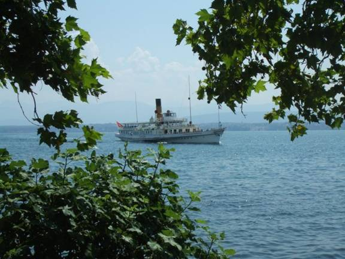
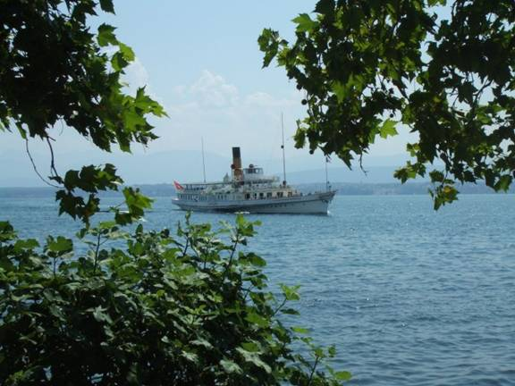

|
|
|
|
|
|
|
|
|
|
|
|
|
|
||
|
|
||||
|
|
|
পা বাড়ালেই অথৈ পানি... রণদীপম বসু

|
|
|
|
|
|
|
||
|
|
||||
|
|
|
|
|
পা বাড়ালেই অথৈ পানি...
রণদীপম বসু

(০১)
মুঠোয় ধরে না, এত্তো মোটা দড়ি বড়সড় লঞ্চ বা জাহাজের নোঙড় ছাড়া আর কোথাও কি ব্যবহার হয় ? দড়ির মাথাটাকে ঘুরিয়ে বিশেষভাবে আটকে তৈরি করা লুপ বা ফাঁসটাকে ছুঁড়ে দিলো পণ্টুনের এঙ্করটার দিকে। লক্ষ্যভ্রষ্ট শট। তীব্রস্রোতের পেছনটানে সরে আসা লঞ্চের সাথে দড়ির মাথাটাও পণ্টুন ছেড়ে ঝপ করে পানিতে পড়লো।
‘হোগার নিশানা করছস ? হালারপুতরে বউয়ে লাইচ্ছায় না ক্যা !’
খালাসির উদ্দেশ্যে ছোট্ট সাদা টুপি দিয়ে মাথার শীর্ষদেশঢাকা প্রৌঢ় সারেং এর উক্তিতে আদিরসের স্পষ্ট ইঙ্গিত। বুঝতে কারো বাকি থাকে না। লঞ্চের ডেকের সামনে এসে ভীড় করা যাত্রীদের কেউ একজন পাল্টা সরস মন্তব্য ছাড়লো, নিশানা উল্টা হইয়া গেছে যে !
সারেং এর কালো কালো দাঁত বের করা হাস্যোজ্জ্বল মুখে নদীর জলজ বাতাসে লম্বা সাদা দাড়িগুলো ফড়ফড় করে উড়ছে। ততক্ষণে পণ্টুন থেকে দশ পনেরো হাত দূরে ফসকে এসেছে লঞ্চটা। সারেং তার ডান হাত উপরে তুলে কী যেন বিশেষ ইঙ্গিত করলেন। চালকের কেবিনে গাড়ির স্টিয়ারিং এর মতো বিরাট হাতলওয়ালা হুইল ধরে দাঁড়িয়ে থাকা সহকারী পাশের ঝুলে থাকা সুতোটা ধরে টান দিলো বার কয়েক। ঠং ঠং করে কর্কশ চাপা ঘণ্টা বেজে ওঠলো। সদম্ভে গর্জে ওঠলো লঞ্চের ইঞ্জিন, কেঁপে ওঠলো লঞ্চ। একটু একটু করে আবার এগুতে লাগলো পণ্টুনের দিকে।
বিষখালী নদীর যে শাখাটা পিরোজপুরের দিকে চলে গেছে, আধাকিলোতক গিয়ে পরপর দুটো ডানেবামে মোড়। নদীর স্বভাব অনুযায়ী ওখানকার প্রশস্ততা মূল স্রোতস্বী থেকে অনেক বেশি। বর্ষার ভরযৌবনে বাড়ি খাওয়া স্রোতের উল্টাসিধা চক্করে এসে লঞ্চগুলোকে এই আমুয়া বন্দরের ঘাটে অনুকূল স্রোত ছেড়ে প্রতিকূলমুখী করেই পণ্টুনে ভেড়াতে হয়। ঢাকা থেকে বরিশাল, তারপর পটুয়াখালী বরগুনা হয়ে গোটা একদিনের বিরতিহীন নৌভ্রমন শেষে ডাঙাতে পা রাখতেই, কী আশ্চর্য, স্থলভাগটা দুলতে লাগলো ভীষণ ! দাঁড়াতেই পারছি না যেন। লঞ্চে ভাসমান থেকেও যে দুলুনিটা এক সময় আর টের পাওয়া যায় নি, সয়ে গেছে, ডাঙায় এসে এ কী হাল ! কাঁধে ঝোলানো বড় ব্যাগভর্তি বই আর প্রয়োজনীয় কাপড় চোপড়ের বোঝা বাঁ কাঁধটাকে ধ্বসিয়ে দিতে উদ্যত। আর ডান হাতে ধরে রাখা বেডিংটা যেন হাতটাকে ছিঁড়ে নেবে। তার উপরে অস্বস্তিকর দুলুনি। টাল সামলাতে না পেরে বেডিং এর উপরেই ধপ করে বসে পড়লাম।
মধ্য এপ্রিল উনিশশো’ একানব্বই। পেটের দায়ে কখনো দক্ষিণাঞ্চলের এই উপকূলীয় এলাকায় এভাবে আসতে হবে, তা কি ভেবেছিলাম ? বদলিপ্রাপ্ত নতুন এই পানিবেষ্টিত কর্মস্থল, তারুণ্যের তরতাজা চোখে পর্যবেক্ষণ করছি। ক্ষুধায় পেট চোঁ চোঁ করছে। আগে খেতে হবে কিছু। মান যাই হোক, বাংলাদেশের যে কোন লঞ্চঘাটেই খাবারের দোকান থাকবেই। ঝুপড়ি দোকান একটাতে ঢুকে গেলাম। মাটির সেঁতসেতে মেঝে। দু তিনটা কাঠের পলকা চেয়ার টেবিল। মন্দের ভালো একটাতে বসে পড়লাম।
টিনের প্লেটে ভাতের চেহারা দেখে সরু চালে অভ্যস্ত চোখ কপালে উঠে গেছে। মোটা চাল যে দেখিনি বা খাই না তা নয়। কিন্তু ভাত যে এতো মোটা আর প্লাস্টিক স্বভাবের হতে পারে, এ প্রথম জানলাম। শুনতে কৌতুকের মতো লাগবে, কৌতূহল বশতঃ হাত উপরে তুলে পাশের চেয়ারটাতে একটা ভাত ছেড়ে দিলাম। ঠপ করে পড়েই পিংপং বলের মতো আবার লাফ দিলো হাত খানেক উপরে। ডালের সাথে এক বাটি সব্জি আর অন্য একটা থালায় দুপাশে মাথা ও লেজ ঝুলে পড়া বিরাট সাইজের যে সামুদ্রিক মাছটা দিলো, তার নাম জানি না। আমাদের নাগরিক হোটেলের প্রচলিত পিরিচ-মাপা ভাতের সিস্টেম এখানে অচল। পেট মাপা। পরিমাণ যাই হোক, রেট একটাই। আমি অবশ্য কোন রেট টেট কিছুই জানি না। কোন বাতচিতেও নেই। আগে খেয়ে নিই, তার পরে বোঝা যাবে কী অবস্থা। এরই মধ্যে আরেক থালা ভাত চলে এলো। প্রথম দফার অর্ধেকও সামলাতে পারছি না, ভাত চিবাতে চিবাতে গালে চাপায় ব্যথা ধরে গেছে ! খট করে এক কাপ দুধ রাখা হলো টেবিলে, সাথে বেশ মোটা অচেনা জাতের সবুজ কলা একটা। আরে কী ভয়ঙ্কর ! এই ভাতের সাথে দুধ মিশিয়ে কী হবে ! আর কাঁচা কলাই বা মাখবো কী করে ! ভুল ভাঙলো পরে। কলা কাঁচা নয়, পাকাই ; ধরনটাই এ রকম। যাক্ , ভাত খাওয়াও যে রীতিমতো একটা যুদ্ধ হতে পারে, ঝালকাঠি জেলার কাঠালিয়া থানার অন্যতম ইউনিয়ন ও প্রসিদ্ধ ব্যবসা কেন্দ্র আমুয়া বন্দরে পা দিয়ে পুনঃ অভিজ্ঞতা হলো আমার।
জলবায়ু ভূপ্রকৃতি আর জোয়ার ভাটার এ অঞ্চলে বৈরি প্রকৃতির সাথে প্রতিনিয়ত যুদ্ধ করে টিকে থাকা মানুষগুলোর জীবনাচারেও বুঝি এই যুদ্ধস্বভাব মিশে গেছে। অসম্ভব কায়িক পরিশ্রমী এদের পেটের মধ্যে পাথর তো আর দেয়া যাবে না। পাথরের মতো শক্ত মোটা ভাত না হলে চলবে কী করে ? পেটে তো থাকতে হবে কিছুক্ষণ। পানি মুখে দিতেই চোখ মুখ খিচরে এলো আমার। কী ব্যাপার, পানিতে লবণ দিয়েছেন কেন ? নবাগত আমার কথায় একটুও আশ্চর্য না হয়ে দোকানদার বললো, এখানকার পানি এরকমই স্যার, লোনা। আপনি নতুন তো, তাই প্রথম প্রথম এরকম লাগবে। পরে ঠিক হয়ে যাবে।
খাওয়ার বিল শুনে ফের চমকে ওঠলাম ! বলে কী ! আবার হিসাব করেন। দোকানদার অত্যন্ত বিনয় সহকারে বললো, না স্যার, একটুও বেশি ধরি নি। আমি শুধরে দিয়ে বললাম, বিল বাদ পড়েছে কিনা দেখেন ? আত্মবিশ্বাসের কোন অভাব নাই তার চোখে, জ্বী না স্যার, বিল আঠারো টাকাই !
(০২)
রাস্তা আর সাঁকো এক নয়। আমুয়া বাজারের পেটের দিকে ঢুকতে গেলে সিমেণ্টের পাকা বা ইট বিছানো রাস্তাই এর সাক্ষ্য দেয়। প্রশস্ততাও দু থেকে আড়াই হাতের বেশি হবে না। রিক্সার দুটো চাকা পাশাপাশি ধরবে না। কোন যানবাহনের প্রশ্ন তো আসেই না, রিক্সা বা সাইকেলও চোখে পড়েনি একটিও। জালের মতো ছড়িয়ে ছিটিয়ে থাকা অজস্র খাল নালায় ভরপুর এ অঞ্চলে আসলে এসবের চল গড়ে ওঠেনি ভূপ্রাকৃতিক অবস্থানের কারণে। যে কোন দিকে এক কিলো যেতে যেখানে সাঁকো পড়বে কমপক্ষে কুড়িটি, সেখানে আগেভাগে এমন অগ্রসর চিন্তা করাও নির্বুদ্ধিতা বৈ কি। নদীর যে পাড়ে বাজার, আমার অফিস তার অপর পাড়ে। ঘাটে খেয়াপাড়ানী পঁচিশ পয়সা দিয়ে খেয়া নৌকায় চড়ে মাঝির সামনের ছোট পাটাতনে ফেলে রাখা দশ পয়সা পাঁচ পয়সার কয়েনগুলো দেখে বিস্ময় নিয়ে চেয়ে রইলাম কতোক্ষণ। এখনো এর চল রয়েছে ! এক খিলি পানের দাম পঞ্চাশ পয়সা তখন এবং আমাদের বাজার ব্যবস্থায় ওটাকেই লেনদেনের সর্বকনিষ্ঠ মুদ্রা হিসেবে ধরে নেয়া হয়। গোলাকার ঢেউ খেলানো দশ পয়সা ও চৌকোণো পাঁচ পয়সার মুদ্রাগুলোতে খেয়ার তালে তালে আমার কৈশোরও দুলে ওঠছে যেন।
(০৩)
পাকা ভিটা নির্মাণের সময়েই প্রয়োজনীয় পয়েণ্টগুলোতে পিলার আটকানোর উপযোগী করে কতকগুলো লোহার এঙ্গেল আগে থেকেই স্থাপন করে রাখা হয়। পরে শুধু মোটা মোটা নাটবল্টু দিয়ে কাঠের পিলারগুলোকে আটকে ঘরের ফ্রেম তৈরি করে টিনের ছাউনী লাগিয়ে অথবা পিলার গুলো বসিয়ে ঘরের বাকি দেয়াল বা আড়ালগুলো আলাদা তৈরি করে পার্ট পার্ট এনে বসিয়ে দিয়ে বাড়িঘর বানানোর যে প্রক্রিয়া, এরই আধিক্য এখানে। জামাকাপড়ের মতোই, যদিও দেখিনি এমনটা, নানা রঙের নানা ঢঙের বৈচিত্র্যময় দেয়াল লাগানো আর সরিয়ে ফেলার কী চমৎকার ব্যবস্থা ! আর্থিক সঙ্গতির বিষয় বিবেচনায় নিলে এতোটা বিলাস ব্যসনের সুযোগ কি এখানকার মানুষদের আছে ? ঢাকার মুন্সিগঞ্জ এলাকায়ও এরকমের বাড়িঘর বানানোর প্রবণতা ল্ক্ষ্য করেছি। তবে মুন্সিগঞ্জের সাথে এখানকার ঘরের প্যাটার্ণে বিশেষ পার্থক্য রয়েছে। প্রথমত ওখানে টিনের দোতলা ঘর চোখে পড়েনি। দ্বিতীয়ত এখানকার ঘরগুলোতে টিনের ছাউনীর সামনের ঢালের দৈর্ঘ্য নরমাল হলেও পেছনের দিকে নামতে নামতে এতোটাই নীচে নেমে আসে যে মাথাটাকে শরীরসমেত নব্বই ডিগ্রী না নুইয়ে পেছন দরজা দিয়ে বেরুনোর উপায় থাকে না। উপকূলীয় এলাকার প্রতিকূল বাতাসের তীব্র ধাক্কা কাটানোর অন্যতম উপায় হয়তো। পাকা বাড়ি থাকলেও পরিমাণে নগন্য।
এরকমই টিনের দোতলা একটি বাড়ি আপাতত আমার ঠিকানা। নীচতলায় অফিস, উপরতলায় থাকার ব্যবস্থা। কাঠের সরু সিঁড়ি মাড়িয়ে দোতলা মানেই কাঠের পাটাতনের উপর তিন দিক বন্ধ এক দিক খোলা আধো অন্ধকার প্রকোষ্ঠ। যদিও দুপাশে দুটো ছোট্ট গরাদ বা জানালা রয়েছে, তার কার্যকারিতা যে কী, তা অবগত হওয়ার বিশেষ কোন সুযোগ খুব একটা পাওয়া হয়নি। ব্যাচেলর বা ম্যারেড ব্যাচেলরদের থাকার সুব্যবস্থা হিসেবে আমিও দোতলার এই প্রকোষ্ঠে ঠাঁই নিলাম। পোক্ত দেখে সস্তায় একটা ওয়ান টাইম খাট কিনে বিছিয়ে দেয়া হলো গণবোর্ডিং স্টাইলে। এই খাটই আবাস, খাটই সংসার আমার।
সম্পূর্ণ হাওয়াই মাধ্যম দিয়ে বিদ্যুৎ বয়ে নিয়ে আসার কোন বৈজ্ঞানিক প্রযুক্তি আবিষ্কৃত না হওয়ায় চারদিকের পানি সাঁতরে এলাকায় বিদ্যুতের শুভ পদার্পণ তখনো দুর্মর আকাঙ্ক্ষার পর্যায়েই রয়ে গেছে। ফলে এখানে রাত মানে হ্যারিকেনের টিমটিমে কেরোসিন আলোয় সন্ধ্যায় মধ্যরাত্রি নেমে আসা, আর দ্বিপ্রহরে রোদের খরতাপে চুল্লির মতো ফুটতে থাকা চারদিকে টিনবেষ্টিত এই দ্বিতল প্রকোষ্ঠকে দোজখের ওম বললে একটুও অত্যুক্তি হবে না। কটকটে দুপুরে মানুষ যখন ঘরের শীতল ছায়ায় শরীরটাকে বিছানায় গড়িয়ে দিয়ে দিনের দ্বিতীয়ভাগের জন্য ঝনঝনে প্রস্তুত করে তোলে, আমরা তখন ঘরপালানো এতিম নাবাল কয়েকজন পাশের সরকারি গোডাউনের দেয়ালের ছায়ায় শরীর এলিয়ে দিয়ে মধ্যদুপুরে জীবন ও জগত নিয়ে দার্শনিক আলাপে মত্ত হয়ে ওঠি। আর অভাগা দেশটার জন্য আফসোস করতে থাকি, আহা, এই বিরল প্রতিভাগুলোর ভয়ঙ্কর সব গুণাবলীর কী দুঃখজনক অপচয় ! গরীব দেশ, এ ক্ষতি পোষাবে কী দিয়ে !
(০৪)
মেসের লঙ্গর ব্যবস্থা। কাজের বুয়া, ওখানকার আঞ্চলিক ভাষায় মাতারি, মাথা গুনে তরকারি বাটি করে রেখে যায়। নতুন এলাকার সবকিছুই নতুন আমার কাছে। খাবার উপকরণ, রান্নার ভিন্নতা, স্টাইল, স্বাদ সবই। খুব আয়েশ করে শাকভাত চিবুচ্ছি। লোকমার ভেতরে আর কী কী আছে তা কি আর খুটে খুটে দেখা হয়। সবকিছুতেই কমন আইটেম নারিকেলের ব্যবহার আমার কাছে অত্যন্ত উপাদেয়। নতুন যে উপকরণটা চিবুচ্ছি, প্লাস্টিকের মতো, কিছুতেই দাঁতের ফাঁকে ভাতের সাথে মিশছে না। পাশের সহকর্মী দেখছি নিরুপদ্রবে অত্যন্ত স্বাভাবিক ভঙ্গিতে খাচ্ছে। কৌতূহলী হয়ে মুখ থেকে খাদ্যবস্তুটা হাতে নিয়ে নেড়েচেড়ে পরখ করছি কী এটা। কালো ইঞ্চি দেড়েক লম্বা। এটা কী ? সহকর্মীর নির্বিকার উক্তি, জোঁক, ফেলে দেন। আমি হা করে তার মুখের দিকে চেয়ে রইলাম।
আল্লা মালুম, আরো কতো কী যে ভাতের সাথে গলে গলে পেট ও শরীরের পুষ্টি বাড়িয়েছে জানি না। এই বিশেষ প্রাণীটির গঠন বৈশিষ্ট্যও কেন যে গলন্ত স্বভাব পেলো না ! তাহলে কি আর এই দুর্বিপাকে পড়তে হতো ! চাইলেই তো আর খাবার খানা ছেড়ে দেয়া যায় না। লেখাপড়ার ক্ষেত্রে এমনিতেই সর্বভুক প্রজাতির মানুষ আমি। এবার নিজেকে অনুপ্রাণিত করলাম এই ভেবে যে, যাক্ মন্দ কী, খাওয়াদাওয়ায়ও সর্বগ্রাসী চর্চার বিরল একটা সুযোগ পাওয়া গেলো ! তবে জোঁকের উৎপাত যে কেবল ভাতের প্লেট বা তরকারির কড়াইতেই সীমাবদ্ধ, তা নয়। এটা এ এলাকার সর্বত্র বিরাজিত অন্যতম প্রাণী। বাইরে এক পাক ঘুরে আসবেন আর জোঁকের আদরের ছোঁয়া পাবেন না, এটা কী করে হয় ! হ্যারিকেনের মৃদু আলোয় হুমায়ুন আজাদের ‘নারী’ ফার্স্ট এডিশনটা খুব মনোযোগ দিয়ে পড়ছি। হঠাৎ দেখি মেরি ওল্ডস্টোনক্রাফ্ট না কি ভার্র্জিনিয়া উলফ-এর ছবিটার কপালের উপরের ভাগটা লম্বা হযে দুলে দুলে আমাকে টা টা জানাচ্ছে ! বিষয় কী ? দৃষ্টি তীক্ষ্ণ করে দেখি জোঁক। এক মাথা ছবির কপাল কামড়ে অন্য মাথায় বিজয় নিশান উড়াচ্ছে। পায়ের আঙ্গুলের ফাঁকে ভীষণ চুলকাচ্ছে। চুলকাতে গিয়ে হাতের আঙুল একটা রবারের ফাঁসের সাথে আটকে গেছে। চমকে পা টেনে মাথা কাছে নিয়ে দেখি দুদিক থেকে সজোরে কামড়ে আটকে আছে গা সিনসিন করে ওঠা জোঁকটা।
(০৫)
সহকর্মীকে সাথে নিয়ে অফিসের কাজে ফিল্ডে যাচ্ছি। ভরসা একমাত্র সচল মাধ্যম জন্মগত উত্তরাধিকার পা দুটো। সকালের মিষ্টি আলোয় দুজন হাঁটছি। প্রকৃতির কী বিচিত্র সৌন্দর্য ! এমন অকৃপণ আশির্বাদ আর কোন দেশে আছে কি ? প্রকৃতির স্নেহ-আঁচলের তলায় না এলে তা কেউ উপলব্ধি করতে পারবে না। মাটির পায়ে-চলা পথ, একটা থেকে আরেকটা সৃষ্টি হয়ে অন্যদিকে চলে গেছে, কোথাও আবার আরেকটার সাথে মিশে নতুন নিশানা তৈরি করে বেঁকে গেছে আরেক দিকে। ঘন বিস্তৃত বাঁশঝাড়ের তলা দিয়ে এঁকেবেঁকে এগিয়ে বাঁশের সাঁকো পেরিয়ে ঢুকে গেছে নাম না জানা কতো গাছগাছালির সবুজের ভেতর। প্রকৃতির অকৃত্রিম সন্তান হরেক প্রজাতির পাখ-পাখালের কিচিরমিচির কলকাকলি মেখে মেখে খালের পাড়ে পাড়ে হাঁটছি। কিছুদূর গিয়ে বড় তালগাছের গুঁড়ি খালের এপাড় ওপাড় যুক্ত করে রেখেছে। ওপাশে বিস্তৃত ফসলি জমি। ধান পাট শাক সব্জি কত কী ! জমির আলে আলে হাঁটাপথ। ঝিরঝিরে বাতাস শুধু কি শরীর বুলিয়ে যাচ্ছে ? মনটাকেও শীতল ছোঁয়ায় ভরিয়ে দিচ্ছে। কোথাও পথ নেমে গেছে। আলুথালু ভাঙা। আবার বাড়িঘরের পাশ দিয়ে লাউয়ের মাচা , পুঁইএর মাচা, মরিচ খেতে ছিটিয়ে থাকা লাল লাল আগুনের ফুলকি পেরিয়ে সারি সারি তাল নারিকেলের গাছ ফেলে এগুতে থাকি। এতো ভালো লাগায় আচ্ছন্ন যে, মরে যেতে ইচ্ছে করে ! কাছে দূরে কোথাও থেকে কুলকুল জলপতনের শব্দটা ধীরে ধীরে বাড়ছে। সহকর্মী বুঝালো, জোয়ার শুরু হয়েছে তাই পানি বাড়ছে। শুকনো খাল নালাগুলোতে এরই শব্দ। পূর্ণ জোয়ারের আগেই ফিরতে হবে। নইলে সমস্যা। প্রশস্ত বিশখালী নদীটির দিকে তাকিয়ে আনমনা হয়ে গেলাম। চারদিকের এতো ঘন সবুজের বুক কেটে কেটে এতো চওড়া তীব্রস্রোতা নদী দেশের পূর্বাঞ্চল বা উত্তরাঞ্চলে কি আছে কোথাও ! নদীটির দিকে চেয়ে থাকতেই ইচ্ছে করে। বুকের ভেতরে কোথায় যেন আরেকটা উন্মনা নদীর কুলকুল আওয়াজ পাচ্ছি। ওটাতেও কি পাড় ভাঙে ? প্রিয়তম মুখটা কি ওই পাড়ে বসে আছে ? এই জীবন না কি কোনো মানুষীর জন্য বুকটা হু হু করতে লাগলো !
মানুষ ছাড়া অন্য কোন প্রাণীর বুক কি এমন হু হু করে ? হয়তো করে, হয়তো করে না। প্রকৃতির বিচিত্র অভিঘাতে উঠে আসা চাপা কষ্টটা বুকে নিয়ে পথ হাঁটছি। ধানী জমির পাশে একটা লম্বা দণ্ডের মাথায় আধহাতের চেয়ে বড় ব্যাসের রিং-এ নেটের ঝোলা আটকানো বিশেষ ধরনের সরল একটা যন্ত্র। দেখতে বড়সড় হাতার মতো। এটি হাতে নিয়ে বিপর্যস্ত দৃষ্টিতে বসে থাকা লোকটিকে দেখে মায়া হলো। ওগুলো কী ! ধান গাছগুলো পুষ্ট হয়ে উঠেছে সবে। তখনো থোড় আসে নি। কিন্তু গাঢ় সবুজ পাতাগুলোর মাঝে মাঝে অনেকগুলো কালো কালো স্পট ও ক্ষতচিহ্ণ দেখা যাচ্ছে। অনভ্যস্ত চোখে অন্তত এটুকু বুঝতে পারছি যে কোথাও একটা সমস্যা। আমার সহকর্মী বললো, পোকা, পামরি পোকা। দাঁড়িয়ে গেলাম।
শহুরে জীব হিসেবে বড় হতে হতে পিতৃসূত্রে কোথায় কতটুকু সামান্য জমিজমা রয়েছে তাও জানি না। জীবনে কখনো নিজেদের জমির আলেও হাঁটি নি। তাই পোকার উপদ্রব শুনে থাকলেও ভালো করে দেখার সুযোগ হয় নি কখনো। সহকর্মীটি বলে যাচ্ছে, এখানকার মাটিতে একে তো লবণাক্ততা, তার উপরে এক ফসলি জমিগুলোতে আমন ফসল উঠে যাবার পর জমি ফেলে না রেখে খামার করে দু’বছর যাবৎ ইরি চাষের প্রক্রিয়া চলছে। দেখা গেছে, পোকার আক্রমণ অন্য যে কোনো অঞ্চলের চেয়ে এখানে অনেক বেশি। ফলে কীটনাশকের অতিব্যবহারের কারণে ন্যাচারাল ইকো সিস্টেমে ইতোমধ্যে যে বিরূপ প্রভাব পড়তে শুরু করেছে সে আলোকে এবার কীটনাশক ব্যবহার নগন্য পর্যায়ে নিয়ে আসা হয়েছে। কিন্তু পরিবেশের ক্ষতিকারক নয় এমন পদ্ধতি আইপিএম বা সমন্বিত বালাই দমন কর্মসূচি এই তীব্রতায় আদৌ কি তা রুখতে পারবে ?
তার কথায় আমি যে কী ভাবলাম, আর আমার ভাবনাকে আমার সহকর্মীটিই বা কী বুঝলো সেই জানে। হঠাৎ করে পা থেকে স্যাণ্ডেল খুলে প্যাণ্ট ভাঁজ করে গুটিয়ে হাঁটুতক উঠিয়ে সোজা ওই জমির কাদায় নেমে গেলো। আকস্মিক এ ঘটনায় আমি বিব্রত ! এক জায়গায় ঠায় দাঁড়িয়ে সে তার ছাতাটাকে মেলে চিৎ করে ধরলো। নাগালের মধ্যে ধানগাছের যে ক’টা গোছা পড়লো ওগুলোর গায়ে খোলা ছাতার কিনার দিয়ে বাড়ি মেরে ঘষটে ঘষটে কী যেন করলো। এবং কয়েক মুহূর্ত পরেই উঠে এলো। যে মুহূর্তে আমি তার মাথার সুস্থতা নিয়ে অতিশয় চিন্তিত হয়ে উঠছি, ঠিক তখনই সে কড়াইয়ের মতো চিৎ করা ছাতার ভেতরের দিকে ইঙ্গিতে কিছু দেখাতে চাইলো। মটরদানার সাইজের কালো রঙের শত শত অজস্র পোকা কিলবিল করছে। এগুলোই পামরি পোকা ? ধানের ভয়ঙ্কর বালাই ! মাত্র কয়েকটা গোছা থেকে এতগুলো পোকার দঙ্গল একসাথে স্তুপিকৃত অবস্থায় দেখে আমি হতবাক।
(০৬)
মূলত পরিবহন সুবিধাকে কেন্দ্র করেই স্থানীয় ব্যবসা বাণিজ্য নিয়ন্ত্রিত হয় বলে দেশের বিভিন্ন অঞ্চলের বাজার হাট জমে ওঠার তরিকাও ভিন্ন ভিন্ন। কোথাও দিনব্যাপি, কোথাও খুব ভোরে হাট বসে রোদ তেতে ওঠার আগেই হাট ভেঙে যায়। কোথাও বা বিকেলে বসে সন্ধ্যায় শেষ। কোথাও আবার সন্ধ্যার পর হাট শুরু হয়ে তা গভীর রাত অব্দি সরগরম থাকে। আর এখানকার বাজার হাটগুলো জোয়ারের সময় জমে ওঠে এবং ভাটার টানে ভেঙে যায়। নদীর দ্বিমুখী স্রোতের কারিশমায় জোয়ারের ভরা স্রোতে যে সব বোঝাই নৌকা হাটে এসে মালামাল উগরে দিয়ে বসে থাকে, বেচাবিক্রির পর ওগুলোই আবার অবশিষ্ট মালামাল নিয়ে ভাটার নেমে যাওয়া ওল্টোস্রোতে ফিরে যায়। এই জোয়ারভাটা নিয়ন্ত্রিত জীবন ও জীবীকা স্থানীয় অধিবাসীদের জন্য অত্যন্ত স্বাভাবিক হলেও বহিরাগত আমার অনভ্যস্ততার জন্যই তা বিব্রতকর বৈ কি।
কাজ সেরে ফেরার পথে মনে হলো পথটা কি বদলে গেছে ? পথ বদলায়নি, তবে রাস্তা বদল করা হয়েছে। যে কোণাকোণি পথ ধরে এসেছিলাম, জোয়ারের কারণে সে পথে ফিরে যাওয়ার উপায় নেই আর। আমার চে’ও সহকর্মীর তাড়া বেশি দেখছি। দুকদম গিয়েই একটা করে সাঁকো। কখনো বাঁশের, কখনো সুপারির, কখনো খেজুরের, কখনো তালের গুঁড়ি। কোনটাতে পথিকের সুবিধার্থে রেলিংয়ের মতো করে ধরার ব্যবস্থা, কোথাও নিরম্বু, দুলতে দুলতে টলতে টলতে কোনোভাবে পেরুনো গেলো এরকম। এবং যে শুকনো কটকটে রাস্তার ভাঙাটা হেঁটেই পার হয়েছি আগে, ওখানে এখন পানির গভীর স্রোত। প্যাণ্ট ভাঁজ করে উঠাতে উঠাতে শেষ পর্যন্ত কোমড়জলে সয়লাব। আশেপাশে শুকনো ময়ানগুলো জলে টইটম্বুর। মাছ ধরার কতো রকমের সরঞ্জাম হাতে নিয়ে লোকগুলো মাছ শিকার করছে। এগুলো কাটিয়ে কোথাও পা ভিজিয়ে কোথাও গা ভিজিয়ে অফিসে এসে পৌঁছলাম যখন, দড়দড় করে ঘামছি।
কিছুক্ষণ জিরিয়ে নিয়ে ভাঁজ করা ভেজা প্যাণ্টের দিকে চোখ পড়তেই দেখি রক্ত ! পায়ের কয়েক জায়গা থেকে আলতো রক্তের ধারা। ব্যাপার কী ! দেখি রক্ত খেয়ে ঢোল হয়ে ওঠা জোঁকটা বহির্মুখী গজেন্দ্র চালে শরীরটাকে সোজা-বটা করতে করতে এগিয়ে যাচ্ছে।
(০৭)
পাড় থেকে নদীর ঢাল ধরে প্রায় পঁচিশ ত্রিশ হাত নেমেই তবে ফেরি নৌকাটা। গোদারা নৌকাও বলে। সদ্য পড়া পলির থকথকে কাদা মাড়িয়ে অবশ্য যেতে হয় না। পাড় থেকে কিছুটা নেমে বাঁশের তৈরি সাঁকো দিয়ে নৌকায় গিয়ে উঠতে হয়। সমস্যা হয় পানি আরেকটু নেমে গেলে। তখন ঠিকই কাদা মাড়াও। দুহাত ফেরিনৌকার পুরু ধারটাতে স্থাপন করে শরীরের গোটা ওজনটাকে ফেরিতে সঁপে দিয়ে সার্কাসের ক্লাউনের মতো পা দুটোকে নদীর পানিতে নেড়েচেড়ে কাদামুক্ত করে অতঃপর একে একে নৌকায় উঠা। দুঘণ্টা আগেও অঢেল পানি এরই মধ্যে এতোটা নীচে নেমে গেছে ! হয়তো আরো দু’তিন ঘণ্টা পর ফের উল্টো দৃশ্য দেখা যাবে। ফেরিঘাট থেকে কিছুটা দূরে বসে আমরা আরো অনেককিছুর মতো এসবও দেখছি। আর অপেক্ষা করছি ওপারের পণ্টুনে দিনের শেষ লঞ্চটা কখন এসে ভিড়বে। ওটাতে করে গুটিকয় যে দৈনিক পত্রিকাগুলো এসে পৌঁছবে, আমাদের জন্য সদ্য কড়কড়ে হলেও আদতে তা গতদিনের। কোন আপদবিপদ না ঘটলে দিনের পত্রিকা আমরা পরদিন সন্ধ্যের মধ্যেই হাতে পেয়ে যাই। ততক্ষণে পৃথিবী আরো দেড়দিন এগিয়ে গেলেও আমাদের এখানকার পৃথিবীটা খুবই ছোট এবং বড় বেশি নিস্তরঙ্গ।
অফিস শেষে আমাদের একমাত্র গন্তব্য এবং বিনোদন বলতেও দু’মিনিটের হাঁটার দূরত্বে এই নদীর পাড়টাই। কতো বিচিত্র মানুষের আসা-যাওয়া দেখা, সদ্য ধরে আনা বরফহীন রূপালি ইলিশের চকচকে ঔজ্জ্বল্যও একঘেয়ে চোখে ম্লান হতে শুরু করেছে। আমার অবস্থান দু’সপ্তাহও পূর্ণ হয় নি, এরই মধ্যে হাফিয়ে ওঠছি। পানির দরে বিক্রিত দুধের পাত্রে দুধে পানি মেশানো হয়েছে, না কি পানিতে দুধ মেশানো হয়েছে তা জানার কৌতূহল বা বিশ টাকায় বিরাট একটা কলার ছড়ি কেনার আগ্রহেও রীতিমতো ভাটা পড়েছে। চাকুরিতে ঢোকার বয়সসীমা তখনকার নিয়মে সাতাশ পেরিয়ে গেছে। আরো কিছুদিন পর বিসিএস প্রিলিমিনারী টেস্টের ইণ্টার্ভ্যু কার্ডটা বাড়ির ঠিকানা ছুঁয়ে রিডাইরেক্ট হয়ে আমার হাতে পৌঁছবে যখন, ততদিনে পরীক্ষা গত। আমার অবস্থা তখন দিবানিশি কান্দিরে নদীর কূলে বইয়া।
এই নদীর পাড়ে বসেই জোয়ার ভাটায় উথলে উঠা যৌবনের আসা আর যাওয়া ছাড়াও এ নদীর আরো কতো যে রূপ দেখা হয় ! হাটবারে সে আরেক দৃশ্য। দূর থেকে আমুয়ার দিকে ছুটে আসা লঞ্চগুলোকে তখন গতি কমিয়ে সাইরেণ বাজাতে বাজাতে সাবধানে ঢুকতে হয় ভেতরে। নদীর মোড়, যেখানে প্রায় আধা কিলো প্রশস্ত হয়ে নদীটা ঘুরে গেছে, নৌকা আর নৌকা। বিশেষ করে ধান উঠার মৌসুমে বাজারের যে দিকটাতে ধান বেচা-কেনার হাট জমে উঠে, পুরোটাই নদীর উপরে। সকালে টুথব্রাশ মুখে নিয়ে স্নান করতে নদীর চঞ্চল পাড়টাতে এলেই দেখা যায় দূরে গোটা নদীটাই ব্লক হয়ে আছে নৌকা আর নৌকায়। জোয়ার বা ভাটার জোরালো স্রোতের মধ্যেও শত শত নৌকা স্থির, দণ্ডায়মান। সবগুলোকে পাড় ছুঁয়ে দাঁড়ানোর মতো জায়গা দিতে নদীর সুদীর্ঘ চলমান পাড়ের ঘাটতি বা কার্পণ্য থাকার কথা নয়। কিন্তু বাজারের পরিসরের সীমাবদ্ধতা শেষ পর্যন্ত নদীকেই বইতে হয়। একটার পেছনে আরেকটা, তার পেছনে আরেকটা, তার পেছনে আরো, এভাবে ডানে বামে সামনে পেছনে একের পর এক হরেক পদের নৌকার সাথে নৌকার যে পারস্পরিক গুচ্ছ বন্ধনের বিশাল আয়োজন গড়ে উঠে, নদীর উপর তৈরি হয়ে যাওয়া এই বিস্তৃত ভাসমান ধানবোঝাই স্বয়ংক্রিয় পাটাতনে ঘুরে ঘুরে ক্রেতা-বিক্রেতাদের এক তুমুল শোরগোল অনেক দূর থেকেও কানে আসে। দক্ষিণাঞ্চল ছাড়া বাংলাদেশের অন্য কোন অঞ্চলে এমন দৃশ্য কি কল্পনা করা চলে ?
এর মাঝেও খুব সাধারণ কিছু ঘটনাই কেন জানি অসাধারণ হয়ে দেখা দিতে থাকে আমার কাছে। অনিবার্যভাবেই বসে আছি নদীর পাড়ে। গতকাল সন্ধ্যায় ঢাকা থেকে ছেড়ে আসা দিনের শেষ লঞ্চটা এসে ভিড়েছে পণ্টুনে। এখান থেকে উৎসুক দৃষ্টিতে দেখছি, ধরাধরি করে একটা রিক্সা নামানো হলো ঘাটে। তোলা হলো নৌকায়। এবং ভিড়লো এসে এপাড়ে আমাদের কাছাকাছি জায়গা দিয়ে। এমন অদ্ভুত চাকাঅলা যান দেখতে অনেক ছেলে বুড়োই ঘর থেকে বেরিয়ে এলো। এবং কী আশ্চর্য, উপরে উঠানোর পর সে এক তুলকালাম ব্যাপার ! ছেলে বুড়ো সিকি আধলি যে যেমন পারছে উঠে বসছে রিক্সাটাতে। কেউ সীটে, কেউ পাটাতনে, কেউ পাদানিতে, কেউ মাটঘাটে, কেউ স্টিয়ারিয়ে, কেউ পেছনে ঝুলে, কেউ চালকের আসনে, কেউ চাকায়, কম করে হলেও গোটা কুড়ি তো হবেই। আহা, বুকের ভেতরটায় কেমন করে ওঠলো আমার ! এদের পৃথিবীটা কতো সীমিত হয়ে আছে। এই ছোট্ট সীমানা ছেড়ে ছোট ছোট ছেলেমেয়েগুলোর কথা বাদই দিলাম, অনেক বয়ষ্কাদেরও সৌভাগ্য হয় নি শহর নামক কোন লোকালয়ের চেহারাও একপাক দেখে আসার। তাদের কাছে এখানে ব্যবহার অনুপযোগী এই অদ্ভুত চাকাঅলা যানটাও বিস্ময়ের বস্তু বৈ কি। অথচ এই যানটা যে তাদের মতো সম্বলহীন অবস্থার মানুষদেরই জীবীকানির্ভর মহার্ঘ নাগরিক সম্পদ, এটাও কি এরা জানে ? রাষ্ট্রের ভৌত অবকাঠামো তথা সহজ যোগাযোগ ব্যবস্থার দুঃখজনক ঘাটতি একটা জনগোষ্ঠীকে কতোটা বঞ্চিত রেখে দেয় তা ভাবতে ভাবতে মনটা সত্যি বিষণ্ন হয়ে ওঠে।
আমাদেরই এক সহকর্মী কী মনে করে পাশের শাখা থেকে তার ফনিক্স সাইকেলটা নিয়ে আসছেন। হয়তো লঞ্চে বাড়ি পাঠাবেন। আসার পথে তিনি কি সাইকেলে চড়েছেন না কি সাইকেল তাকে চড়েছে এটা গুরুতর গবেষণার বিষয় হলেও এ অঞ্চলের হালচাষের অনিবার্য প্রাণীমাধ্যম মহিষগুলো যে নাগরিক প্রাণীদের মতো এতোটা শিক্ষিত হয়ে ওঠতে পারে নি, তা সম্ভবত ওই সহকর্মী ভুলেও ভাবেন নি। অথবা এটাও যে ভাবার মতো একটা বিষয় হতে পারে তাও তার মাথায় আসেনি। কারো মাথায়ই হয়তো আসার কথা না। ফলে যা হবার তাই হয়েছে। কাদায় জলে সাইকেলে মানুষে একাকার হয়ে এক অদ্ভুত মূর্তিমান রূপ ধরে তিনি অফিসে এসে পা দিতেই তাকে দেখে আমরা হাসবো না কাঁদবো তাই ভুলে গেলাম। কী ব্যাপার ! রাস্তায় চড়ে বেড়ানো মূর্খ মহিষগুলো তাদের পূর্ব অভিজ্ঞতার বাইরে এমন আচানক চলমান বস্তুকে তাদের দিকে ধেয়ে আসতে দেখে নিজেদের চিন্তাজগতে কী আলোড়ন তুললো কে জানে। আত্মরক্ষার তাগিদে না কি আক্রমণের বেয়ারা স্বভাবে এরা এমন পাগলা হয়ে ওঠলো যে, আমাদের সহকর্মী কি চতুর্মুখী তাড়া খেয়ে না কি আচমকা বোধশূন্য হয়ে নিজেই খালের দিকে তেড়ে গেলেন তা বোঝানোর মতো অবস্থা তখন তার নেই। নিষ্পাপ প্রাণী মহিষকে আর দোষ দিয়ে কী লাভ। মানুষই তো কতো জায়গায় কতো ভাবে কতো অভূতপূর্ব ঘটনার অঘটনঘটনপটিয়সী হয়ে ওঠে !
(০৮)
২৯ এপ্রিল ১৯৯১। এখানে এসেছি তিন সপ্তাও পুরো হয়নি তখনো। আগের দিন থেকেই সম্ভাব্য ঘূর্ণিঝড়ের দশ নম্বর মহাবিপদসংকেত দেখানোর ঘোষণা প্রচার হচ্ছে রেডিওতে। এখানকার বিনোদনের একমাত্র ইলেকট্রনিক্স মাধ্যম হচ্ছে রেডিও। তা আবার এক ব্যান্ডের ছোট্ট রেডিওর প্রচলই বেশি। হাতের মুঠোয় নৌকায় মাঠে ঘাটে হাটে বাজারে সহজ বহনযোগ্যতা আর তুলনামূলক সাশ্রয়ী হিসেবে আনাচে কানাচে মানুষ আছে অথচ খশখশে যান্ত্রিক আওয়াজের সাথে কথা-সুর ভেসে আসবে না তা চিন্তাও করা যায় না। বিনোদন বিলাসী বাসাবাড়িতে কারো কারো হয়তো চার পাঁচ ব্যাটারির শক্তিখেকো তিন ব্যান্ডের বড় রেডিও বা টুইন ইন ওয়ানও রয়েছে। থেকে থেকে ঘোষণা হচ্ছে, চট্টগ্রাম কক্সবাজার ফেনী নোয়াখালী ভোলা খুলনা বরিশাল পটুয়াখালী ঝালকাঠি বাগেরহাট পিরোজপুর বরগুনা জেলাসমূহ এবং তৎসহ উপকূলীয় অঞ্চলসমূহকে দশ নম্বর মহাবিপদসংকেত দেখিয়ে যেতে বলা হচ্ছে। সাগর প্রচণ্ড উত্তাল থাকবে এবং দশ থেকে পনের ফুট কোথাও কোথাও আরও বেশি উচ্চতার জলোচ্ছ্বাসের সম্ভাবনা রয়েছে। উপকূলীয় দ্বীপ ও নিম্নাঞ্চলের অধিবাসীদের নিরাপদ আশ্রয়ে চলে যেতে বলা হচ্ছে।
সকালে ঘর থেকে বেরুতেই অফিসের সামনেতক নদীর উপচে আসা সচল পানি দেখে ভড়কে গেলাম ! যথারীতি সূর্য উঠা পরিষ্কার আকাশ, মেঘের কোন চিহ্ণই নেই। ব্যাপার কী ! সহকর্মী জানালো, আজ পূর্ণিমা, ভরাজোয়ারের ফুলে ফেঁপে ওঠা পানি এগুলো। কিছুণ পরই ভাটার টান পড়লে নেমে যাবে। ওহ্, তাহলে এটাও অতিসাধারণ প্রাকৃতিক ঘটনা। কিন্তু দশ নম্বর মহাবিপদসংকেতের কী হবে ? বুকের ভেতর প্রচণ্ড ঢিপঢিপ, কোন কাজ করতেই বল পাচ্ছি না। অথচ কী আশ্চর্য, এখানকার মানুষদের মধ্যে দুশ্চিন্তার কোন বিন্দুবিসর্গও টের পাওয়া যাচ্ছে না ! সব কিছুই কী স্বাভাবিক ! বাজার হাট ব্যবসা বাণিজ্য জীবন যাপন কোথাও কোন অসঙ্গতি বা ছন্দপতনের ছিটেফোটাও না দেখে বেশ অবাক হচ্ছি আর নিজেও কেন জানি ভেতরে ভেতরে সাহস ফিরে পাচ্ছি। আমাদের অফিসের পাশের ইউনিয়ন পরিষদ অফিসের সদ্যনির্মিত দোতলা পাকা ভবনেও যথারীতি কর্মব্যস্ততা। তবে কি এই দশ নম্বর বিপদসংকেতকে আমরা দূর থেকে যেরকম ভীতিকরভাবে জানি, বাস্তবে তা এতো ভয়ঙ্কর নয় !
দুপুর বারোটাতক পরিষ্কার ঝলমলে রোদ্দুরে ঘূর্ণিঝড়ের কোন আলামতই দেখা গেলো না। এর পর রোদটা কেমন মজে আসতে লাগলো। বেলা দুটোর দিকে সবকিছু কেমন থমথমে হয়ে গেলো। রোদ সম্পূর্ণ মরে গেছে। আকাশে বাতাসে প্রকৃতিতে একটা গুমোট স্তব্ধতা। আমার বুকের ভেতর আরো বেশি। দোকানপাটগুলো দ্রুত বন্ধ হয়ে যেতে লাগলো। হাটভাঙা মানুষের বাড়িফেরার স্রোত। ইউনিয়ন পরিষদের দোতলা ভবনটাতে দলে দলে মহিলাপুরুষ এসে বাচ্চাকাচ্চাসহ আশ্রয় নিতে শুরু করেছে। কীসের অফিস আদালত ! অফিস বন্ধ করে দোতলার খোঁয়াড়ে উঠে গেলাম। সহকর্মীরা মিলে অহেতুক আড্ডায় সাহস ফিরে পাওয়ার বৃথা কসরত শুরু হলো। তিন ব্যান্ডের রেডিওটাতে নতুন ব্যাটারী লাগিয়ে অন করে দেয়া হলো। কাছাকাছি স্টেশন হচ্ছে খুলনা বেতার। ঘেরঘের আওয়াজে ঢাকা বা অন্য স্টেশনগুলোর কিছুই বুঝা যাচ্ছে না। অবশেষে খুলনাতেই মিটার ফিক্সড করে রাখা হলো। মুহুর্মূহু ঘোষণা হচ্ছে, ঘণ্টায় দুশ থেকে দুশ পঞ্চাশ কিলোমিটার বেগে ঝড়ো হাওয়া বয়ে যাবে। পনের থেকে বিশ ফুট উঁচু তীব্র জলোচ্ছ্বাসে সবকিছু ভেসে যেতে পারে। তাই চিড়া গুড় জাতীয় শুকনো প্যাকেটজাত খাবার দিয়াশলাই ও নিত্যপ্রয়োজনীয় গুরুত্বপূর্ণ দ্রব্যাদি মোটা ও পুরু পলিথিনের ব্যাগে শক্ত করে বেঁধে কোন শুকনো উঁচু জায়গায় আড়াইহাত মাটির নীচে পুঁতে রাখার জন্য বারবার সতর্ক করা হচ্ছে। কিন্তু আমাদের এ মুহূর্তে কিছুই করার নেই। সে সময় উত্তীর্ণ।
গুমোট স্তব্ধতা ভেঙে একটু একটু বাতাস বইতে শুরু করলো। হঠাৎ নীচে অফিসের দরজায় কে যেন জোরে জোরে কড়াঘাত করছে। সহকর্মী একজন নীচে নেমে গেলেন। সাথে নিয়ে এলেন পাশের শাখার এক সহকর্মীকে যিনি নাকি এখানকার প্রাক্তন সহকর্মীও। হাতে ব্যাগ। ছুটিতে বাড়ি রওয়ানা দিয়েছিলেন। কিন্তু দুর্যোগপূর্ণ আবহাওয়ায় লঞ্চ বন্ধ। এখানেই রাতটা কাটিয়ে পরদিন যাবেন। কিন্তু আমাদের জীবনে কি পরদিন আর আদৌ আসবে ? মা বাবা ভাই বোন বন্ধু বান্ধব আত্মীয় পরিজন এবং প্রিয়তম মানুষটির জন্য বুকের ভিতর হু হু করে কান্না বইতে লাগলো। আহারে, কেন যে মরতে এই যমের রাজত্বে এসেছিলাম !
দোতলার দক্ষিণ দিকের গরাদ বা ছোট্ট জানালাটা খোলা থাকলো বাইরের পৃথিবী দেখার একমাত্র মাধ্যম হিসেবে। কিছুদূর সামনেই প্রকাণ্ড তালগাছটা মাথা উঁচু করে দাঁড়ানো। তারও পরে নদীর পাড় এবং নদীর বড় একটা অংশ দেখা যায়। বিশেষ করে নদীর বড় মোড়টা এখান থেকে সরাসরি দেখা যায় এবং ওপাড়ের লঞ্চঘাটের আংশিক এখান থেকে আঁচ করা যায়। রেডিওর ঘোষণা অনুযায়ী প্রচন্ড ঘূর্ণিঝড় উপকূলীয় অঞ্চলে আঘাত হানতে শুরু করেছে। ইতোমধ্যে আমরা সহকর্মীরা গুরুত্বপূর্ণ আলোচনাগুলো সেরে নিলাম। ঢিলেঢালা পোশাক শক্ত করে শরীরে আটকে কোমরে গামছাটাকে কষে বেঁধে অত্যাবশ্যকীয় উপকরণ টর্চলাইটটা গুঁজে নিলাম। টাকাপয়সাগুলোও পোশাকের নিরাপদ অবস্থানে রেখে দিলাম। সবাইকে একটা কথাই বলে নিলাম, জলোচ্ছ্বাসে ভেসে গেলে স্রোতের বিপরীতে সাঁতরে শক্তিক্ষয়ের দরকার নেই। স্রোত যেদিকে নেয় নিয়ে যাবে, শুধু ভেসে থাকার চেষ্টা করতে হবে। কী হাস্যকর এসব কথাবার্তা, অথচ কী গুরুত্ব দিয়ে বলছি। অনভিজ্ঞতা আর কাকে বলে !
বাতাসের বাড়ি খেয়ে তালগাছের পাতাগুলো ফড়ফড় করে কাঁপছে। গুঁড়ি গুঁড়ি বৃষ্টি আর বিকেলের অন্ধকার সন্ধ্যা নামিয়ে দিয়েছে। বাতাস এখন উত্তর থেকে দক্ষিণমুখী বইছে। বেগ বাড়ছে তীব্র থেকে তীব্রতর। জোয়ারের সময়। এই বাতাসই যখন ঘূর্ণির রূপ নিয়ে দক্ষিণ থেকে উত্তরে বইতে শুরু করবে, পূর্ণিমার ভরা জোয়ারের সাথে ঘূর্ণিঝড়ের প্রলয়ঙ্করী মোচড় যে আমাদেরকে তীব্রবেগে ভাসিয়ে কে জানে কোথায় নিয়ে চুরমার করে দেবে, তা কেবল সময়ের ব্যাপার। এই টিনের ঘর তো প্রথম তোড়েই দুমড়েমুচড়ে যাবে। এমন ভয়াল আগামী সামনে রেখে সত্যি সত্যি সন্ধ্যা হলো ঠিকই, কিন্তু এ কী ! একটা অপার্থিব ভুতুরে লাল হলুদে মেশানো আলোয় সব কিছু কেমন যেন আধিস্পষ্ট হয়ে ওঠতে লাগলো। এটাই ধ্বংসের পূর্ব মুহূর্ত কিনা কে জানে। এবং তখনি শুরু হলো তাণ্ডব ! চারদিকে ভৌতিক শব্দ, প্রকাণ্ড তালগাছটার শক্ত পাতাগুলো কিসে যেন খাবলে খাবলে তুলে নিয়ে যেতে লাগলো। শো শো সা সা হুম হুম ভো ভো ধুরুম ধারুম আওয়াজের সাথে সাথে আমাদের টিনের দোতলা শক্ত ঘরটা কাগজের মতো কাঁপতে লাগলো। সহকর্মীরা কাঁপতে কাঁপতে দোয়াদরুদ পড়া শুরু করলো। কেউ কেউ ঠাকুর ঠাকুর রোল তুলে দিলো। আশে পাশে কোথা থেকে যেন শঙ্খ আর উলুধ্বণি, এর পরেই কারো সর্বশক্তি দিয়ে আজানের চিৎকারও তলিয়ে যেতে থাকলো। আমি কিছুই শুনছি না আর। বোধবুদ্ধিচিন্তাশক্তি একটু একটু করে লোপ পেতে শুরু করেছে। জীবিত আছি না মরে গেছি সে ধন্ধের মধ্যে থেকেই জানলা দিয়ে বাইরে তাকাতেই ভয়াবহ দৃশ্যটা চোখে পড়লো নিমেষেই। হলুদ ভোঁতা আলোয় স্পষ্ট, সামনের বিশাল নদীটাতে একফোটা পানি নেই ! পাতালের অন্ধকার নদীর গভীরে ! এমন দানবীয় অসহ্য বীভৎস দৃশ্য দেখে চোখ বন্ধ করবো, নিজের শরীরের উপর সে নিয়ন্ত্রণ আর নেই। সম্ভবত জ্ঞান হারাতে যাচ্ছি আমি। এই মহাপ্রকৃতির কাছে পুতুল হয়ে যাওয়া সহকর্মীদের কার কী অবস্থা তখন বলতে পারবো না। বহু দূর থেকে যেন কোন যান্ত্রিক শব্দ হচ্ছে, আর এর মধ্য থেকেই মাঝে মাঝে মানুষের শব্দ, এখন একশ আশি কিলোমিটার বেগে তীব্র ঘূর্ণি হাওয়া বয়ে যাচ্ছে.. এই গতিবেগ দুশো থেকে দুশোপঁচিশ কিলোমিটারে উঠতে পারে.. ঘূর্ণিঝড়ের আঘাতে লন্ডভন্ড ও তলিযে যাওয়া বরগুনার সাথে সকল যোগাযোগ বন্ধ হয়ে গেছে.. ঘূর্ণিঝড় শেষে প্রয়োজনীয় উদ্ধারকাজ চালানোর সব প্রস্তুতি সম্পন্ন হয়ে আছে বলে.. জানিয়েছেন।.. বহু কষ্টে এটা স্মরণ করতে পারলাম যে এখান থেকে বরগুনার দূরত্ব খুব বেশি নয়।
হঠাৎ কারো নাক ডাকার শব্দে যেন চেতন পেলাম। আমাদের সেই বাড়ি গমনেচ্ছু সহকর্মী এই প্রলয়কান্ডের মধ্যেও বেঘোরে নাক ডাকাচ্ছেন ! আবছা আলোয় সময় দেখার চেষ্টা করলাম। দশটা বেজে কত মিনিট যেন। একটু একটু করে স্থান সচেতন হয়ে ওঠছি। সহকর্মীরা পাথরের মূর্তির মতো স্থির হয়ে আছে যে যার জায়গায়। আমিও জানলাটার পাশে সেই আগের মতোই বসে আছি। বাইরে প্রবল ঝড় বইছে। ঘরটাও কাঁপছে আগের মতোই। কিন্তু কী আশ্চর্য, ভেতরে ভয় ডর কিছুই আর টের পাচ্ছি না। বুদ্ধিবৃত্তিও মনে হয় ফিরে আসছে। কেননা তখনি বেঁচে থাকার সপক্ষে যুক্তিসিদ্ধ আলামতগুলো একে একে যাচাই করে নিতে পারছি। এই যেমন বুঝতে পারছি বাতাস এখনো উত্তর থেকে আগের মতো দক্ষিণেই বইছে। আমাদের উত্তরে দোতলা বড় ইউনিয়ন পরিষদ অফিসের ভবনটা বাতাসের থেকে থেকে আঘাত হানা ধাক্কাগুলো ঢালের মতো আটকে দেয়ায় বোধ করি আমাদের ঘরটা এখনো উড়ে যায়নি। আর উল্টো বাতাস তার দানবীয় তীব্রতায় গোটা নদীটাকেই এদিকে না এনে দক্ষিণে সাগরের দিকেই ঠেলে দিয়েছে। না জানি এই বিশাল পানির পাহাড় কতো লোকালয় ভাসিয়ে নিয়েছে ! ওটাই আবার উল্টোমুখী হয়ে ফিরে আসতে কতোক্ষণ !
কোন ভয় ডর কাজ করছে না আর। হতে পারে বেঁচে থাকার এতটুকু আশাও ভেতরে কোথাও আর অবশিষ্ট নেই বলে কিছু হারানোর আশঙ্কাও অন্তর্হিত হয়ে গেছে। সশরীরে মৃত্যু এসে সামনে দাঁড়ালেও মনে হয় এখন নির্বিকার সমর্পণ হতে পারবো তার কাছে। কেবল এক অনির্দিষ্ট কালের আপেক্ষিক সময়ের ফাঁদে আটকা পড়ে অনিশ্চিৎ অপেক্ষার প্রহর গোনা এখন। রাত দুটোর দিকে ঝড়ের তীব্রতা কমে এলো। বিরতিহীন এতো দীর্ঘ অবিচ্ছিন্ন সময়ের নার্ভাসনেসে ভোঁতা হয়ে যাওয়া নার্ভের উপর থেকে একটু একটু করে চাপ কমে আসতে শুরু করলো। এবং তখনি হঠাৎ টের পেলাম যে, বেঁচে থাকার আনন্দ মানুষের এক শাশ্বত বোধ ! বেঁচে আছি, এই দুর্বহ উচ্ছ্বাসই আনন্দে মরে যাওয়ার জন্য যথেষ্ট। তখনো জানি না, বাইরের পৃথিবী আদৌ তার আগের চেহারায় আছে কি না !
(০৯)
তীব্র কোলাহলে ঘুম ভেঙে গেলো। চোখ খুলে আমি কোথায় কেন কীভাবে, কিছুই মনে করতে পারছি না। হ্যাবলার মতো ছাদের দিকে তাকিয়ে আছি। ধীরে ধীরে স্মৃতি ফিরে আসছে। হাঁ, মনে পড়ছে। রাতে এক ভয়াবহ ঘূর্ণিঝড়ে আক্রান্ত হয়েছিলাম ! লাফ দিয়ে উঠে বসলাম। আশ্বস্ত হলাম যে আমি ঘরেই আছি। ঝট করে বাইরে বেরিয়ে এলাম। আহা, এ কী দেখছি আমি ! ধ্বংশস্তুপ ! এই প্রলয়ের বর্ণনা দেয়া কি সম্ভব !
কোথাকার কী এসে কোথায় কীভাবে পড়ে আছে দুমড়ে মুচড়ে। এগুলো বাঁচিয়ে নদীর পাড়ে এসে দাঁড়ালাম। স্মৃতি ধরে রাখার ক্ষমতা বুঝি আকাশের থাকে না। নইলে কয়েক ঘণ্টা আগের তুলকালামের পর এমন পরিষ্কার আকাশ হয় কী করে ! নদীও এমন হতো, যদি তার পাড়গুলো সুনসান হতো। কিন্তু তা তো হবার নয়। তাকে আশ্রয় করেই যে গড়ে ওঠে মানুষের লোকালয়গুলো। তাই প্রকৃতির সংহারি স্মৃতি নদীকেও বইতে হয়। আর নদী বুঝি তা ধুয়ে মুছে আবারো তার অধিবাসীদেরকে প্রস্তুত করে তোলে সব কিছু নতুন করে শুরু করতে। গতকাল বিকেলে যে বিশাল বিশাল লঞ্চ আর মাল বোঝাই কার্গোগুলো এসে ভীড়েছিলো, যেতে পারেনি আর। নিরাপদ আশ্রয় হিসেবে যে স্থানটাকে বেছে নিয়েছিলো, রাতের উল্টোঝড়ে নদীর পানি সরে যেতেই সেই যে কাত হয়ে পড়েছিলো, পানি ফিরে এলেও আর সোজা হয় নি। অর্ধেক পানির নীচে লেপ্টে আছে। চারদিকে গাছপালা একটাও অক্ষত নেই। বাড়িঘর লণ্ডভণ্ড। যেগুলো খাড়া আছে, চাল নেই। কিন্তু আশ্চর্য হয়ে যাই, মানুষগুলোর অস্বাভাবিক মনোবল দেখে ! এরই মধ্যে শুরু হয়ে গেছে ফের নিজেকে সারানো আর সাজানোর পালা। এখানেই জীবন-সংগ্রামী মানুষগুলোর সাথে আমাদের মতো অথর্ব মানুষের বিরাট তফাৎ।
ফিরে এসে দেখি সহকর্মীরা রেডিওতে বিশেষ বুলেটিন শুনছে। দেশের দক্ষিণাঞ্চলীয় উপকূলে যে মহাপ্রলয় ঘটে গেছে তারই বিবরণ। পতেঙ্গা বন্দর থেকে তীব্র জলোচ্ছ্বাসের ধাক্কায় ক্রেনবাহী জাহাজ কাগজের নৌকার মতো প্রায় উড়িয়ে নিয়ে গিয়ে কর্ণফুলি দীর্ঘ ব্রীজে যেভাবে বাড়ি মেরেছে, সাথে সাথে এতো বড়ো সেতুর মাঝামাঝি গুড়ো হয়ে দুভাগ হয়ে গেছে ! পূর্ব সতর্কতা হিসেবে নিরাপদ অবস্থানে না নেয়ায় চট্টগ্রামে বিমানবাহিনীর বেশ কতগুলো বিমান ঘূর্ণিঝড়ে চুরমার হয়ে গেছে। এজন্য রাষ্ট্রপতি শাহাবুদ্দিন আহমেদ কর্তৃক বিমানবাহিনী প্রধানকে তাৎক্ষণিক বরখাস্তের খবরও প্রচারিত হলো। চট্টগ্রাম কক্সবাজার ভোলা সন্দ্বীপ বিশেষ করে উড়ির চর ও আশেপাশের দ্বীপগুলোর সাথে সবধরনের যোগাযোগ বিচ্ছিন্নতার পরও যেসব খবর আসতে শুরু করেছে, তাতেই রক্ত হীম হয়ে যাবার অবস্থা। লক্ষ লক্ষ মানুষের হতাহতের পাশাপাশি অপরিমেয় ক্ষয়ক্ষতির যে আশঙ্কা করা হচ্ছে তা সত্যি হলে পৃথিবীর ইতিহাসে অন্যতম মানবিক বিপর্যয়ের সৃষ্টি হবে ! একটা গরীব রাষ্ট্র তা সামলাবে কী করে ! বস্তুত তাই হয়েছিলো। সে তুলনায় আমাদের এখানে ক্ষয়ক্ষতি কিছুই হয় নি বলা যায়। একই উপকূলীয় বেল্টে থেকেও এ কীভাবে সম্ভব ?
এটাই ঝড়ের প্রকৃতি। বিচিত্র প্রকৃতির এ ভয়াবহ ঘূর্ণির যে বিশেষ কারণে কেয়ামত হয়ে গেলো উড়ির চর সন্দ্বীপ ভোলা কক্সবাজার এবং আশেপাশের দ্বীপগুলো, সেই একই কারণে এই পটুয়াখালী ঝালকাঠি বাগেরহাট খুলনা অঞ্চলে প্রচুর ক্ষয়ক্ষতি হলেও রক্ষা পেয়ে গেলো লক্ষ লক্ষ মানুষের জীবন। বিশাল এলাকা জুড়ে প্রচণ্ড এ ঘূর্ণিঝড়ের ভয়ঙ্কর ঘূর্ণি বা মোচড়টা ছিলো এণ্টিকক ওয়াইজ। ফলে দক্ষিণাঞ্চলের পশ্চিম অংশের ভয়াল বাতাস উত্তর থেকে দক্ষিণমুখী বয়ে সমস্ত নদীনালার পানি সাগরে টেনে নিলেও উন্মত্ত সাগর দক্ষিণ থেকে উত্তরমুখী ধাক্কায় ঠিকই হামলে পড়ে পূর্ব অংশে। এবং বাংলাদেশের ইতিহাসের আরেকটি বিপর্যয়ের দিন হিসেবে অমোচনীয় দাগ রেখে গেলো। যদি এ ঘূর্ণি ঠিক উল্টো মানে ক্লকওয়াইজ হতো, তাহলেও হয়তো বিপর্যয়ের কোন হেরফের ঘটতো না। তখন পশ্চিম অংশে আমরাই মিশে যেতাম চির অজানায়...।
(১০)
মানুষের প্রকৃতিও এমন যে একসময় না একসময় পরিবেশের সাথে তাকে মানিয়ে যেতেই হয়। এটাই বোধ করি টিকে থাকার অনিবার্য সূত্র। আর এক মুহূর্তও নয় ভাবতে ভাবতে আরো ছ’টি মাস কেটে গেলো ঠিকই। অভিজ্ঞতার ঝুলিতেও জমা হলো আরো কতো বিচিত্র সম্ভার। বিভিন্ন অঞ্চলের ভাষাগত আঞ্চলিক ভিন্নতার পাশাপাশি জীবনধারা রীতিনীতির পার্থক্যও অনেক বৈচিত্র্য ধারণ করে। জন্ম মৃত্যু বিয়ে উৎসব পার্বণ সবকিছুই মূলানুগত হয়েও কতো ভিন্ন সুরের কতো বিচিত্র আবেদনময়। এগুলো দেখি আর ভাবি আহা, বাধ্য হয়েই হোক, এখানে না এলে কি এসব দেখতাম জানতাম আর ভাবতাম ?
প্রতিদিনের মতোই সূর্য পাটে যেতে বসেছে। অফিসের নিয়মিত ডাকগুলো হাতে নিয়ে বাই নেমে আসা অফিসিয়াল হলুদ খামটায় চোখ আটকে গেলো। আবার কোন্ পাতলা কাগজ এলো ? অফিসিয়াল কোন ব্যাখ্যা চাওয়া বা শাস্তিমূলক চিঠির জনপ্রিয় কোড নেম হচ্ছে পাতলা কাগজ। তখনো অফিসগুলোতে কম্পিউটারের পুরো প্রচলন ঘটেনি বলে সেই আদ্যিকালের ঠকাঠক টাইপরাইটারে প্রয়োজনীয় অনুলিপিসহ চিঠিপত্রগুলো টাইপ করতে থিন পেপারই ব্যবহার হতো। সব চিঠিপত্রের ক্ষেত্রেই এই কাগজ ব্যবহার হলেও বিশেষ চিঠিগুলোকেই এরকম পাতলা কাগজ নামে ডাকার একটা রেওয়াজ সহকর্মীদের মধ্যে ছিলো এবং এখনো আছে। যদিও এখন আর কম্পিউটার নিয়ন্ত্রিত অফসেট প্রিণ্টারে পাতলা কাগজ ব্যবহার হয় না। যাক্, খামটা হাতে নিয়ে একটু দ্বিধায় থেকেই ছিঁড়লাম। তখনো কি জানতাম, আমার সোনার হরিণটা ওখানেই পোরা ছিলো !
ধড়াশ করে বুকটা লাফিয়ে ওঠলো, বদলির অর্ডার ! এই অথৈ পানির তল্লাটে আর নয়, একেবারে চট্টগ্রামের মিরসরাই। আহ, কী আনন্দ ! এভাবে নদীর কূলে নিরূপায় বসে বসে আর হাহুতাশ করতে হবে না। সেই যে এখানে এসেছি কবে ! আসতে যেতে সাড়ে পাঁচদিনের দূরত্বে আর বাড়ি যাওয়া হয় নি। প্রিয়তম মুখটা দেখি না এক যুগ হয়ে গেছে ! সে কেমন আছে ? কতোকাল তাঁর কণ্ঠ শুনি না ! বুকের ভেতরটায় কোথায় মোচড়াতে শুরু করেছে। এমন বিচ্ছিন্নতা কী করে মানুষ সহ্য করে ! ভয়ানক আশ্চর্য হয়ে ভাবছি, আমিই বা টিকে রইলাম কী করে ! নভেম্বরের পয়লা তারিখেই রিলিজ ডেট। কিন্তু এখনো তো তা আরো পনের দিন ! এতো দিন !
হঠাৎ করে দিনগুলো অস্বাভাবিক লম্বা হয়ে গেলো। সাথে সাথে চারপাশটাকেও কেমোন যেনো ভালো লাগতে শুরু করেছে ! এই জোয়ার-ভাটা, এই তালের রসে তৈরি পাটালি গুড়, বাঁশের তালের খেজুরের সাঁকো, একটা মহিষের কাঁধে অধিবৃত্তাকার ডিমের মতো বাঁকানো বিশেষ ধরনের লাঙ্গলের সূত্র, মাটির লবণাক্ততা, নৌকার ভাঙা গলুই, কাধিভরা মর্তমান কলা, নারকেলে তরকারি মাখা মোটা ভাত, লঞ্চের সাইরেণ সবকিছু। সবকিছুই কেমন যেন আবেগে মোড়ানো, ভালো লাগায় অস্থির। আহারে, ক’দিন পর আর এগুলো থাকবে না ! কী চমৎকার লোনা প্রকৃতি। আসলে তো খারাপ ছিলো না কিছুই। কী মায়া লেগে আছে সব কিছুতেই ! এ সবই ছেড়ে যেতে হবে !
(১১)
কলিগ বন্ধুর সাথে সকালে বেরিয়েছি অফিসিয়াল কাজে। বেশ দূর যেতে হবে। মাধ্যম তো সেই পায়ে হাঁটা। কিন্তু আমার মধ্যে তখন বিদায়ী বাঁশির সুরের আচ্ছন্নতা। তাই এক নতুন বিচ্ছেদি দৃষ্টি দিয়ে দেখছি সব। যেতে যেতে অনেক দূরেই চলে গেছি, প্রকৃতি যেখানে আরো অনেক গভীর। দুপুর পেরিয়ে ফিরে আসছি যখন, কটকটা রোদের তীব্র ঝাঁঝ ছাতায় মানলেও হাঁটার ক্লান্তির সাথে গরমের তীব্রতায় ঘেমে নেয়ে একশেষ দুজন। বিষখালির পাড়ে পাড়ে হাঁটছি। বিস্তির্ণ ধানি জমি। কতো রকমের নাম জানা না জানা সবুজ গাছগাছালি ঝোপঝাড় বন খাল নালা পানি বালু। প্রাকৃতিক বৈশিষ্ট্য হিসেবে প্রচুর তাল আর নারিকেলের গাছের আধিক্য। একটু পর পর তাল গাছের সারি। কাণ্ডশীর্ষে গলায় ফাস লাগানো কলসিগুলোর খোলা মুখে বাঁশের চোঙা, যা গাথা রয়েছে তালের কাঁধির যেকোন একটা কচি তালের বিশেষভাবে কর্তিত অংশে। গাছের গায়ে ছাল তুলে নগ্ন পরিষ্কার অংশ থেকে খেজুর গাছের রস সংগ্রহ করার পদ্ধতি তালের বেলায় ভিন্ন। রস সংগ্রহের এই পদ্ধতি খেয়াল করলে মনে হবে রসবিচারে রসালো অঞ্চলের গাছ হয়েও তালগাছ মোটেও রসালো নয়। অন্যদিকে শুষ্ক মরু অঞ্চলের প্রতিনিধি হয়েও এই খেজুর গাছের অসমতল কাণ্ড বা গুড়িটা এতো রসালো বা রসদানকারীর ভূমিকায় অবতীর্ণ হলো কী করে, তা ভাবলে বেশ আশ্চর্য হতে হয় বৈ কি।
ক্লান্তির সাথে তৃষ্ণায় গলা খাঁ খাঁ করছে। ক্ষুৎপিপাসায় কাবু হয়ে একটু ছায়া দেখে একটা গাছের নীচে জিড়িয়ে নিতে বসে পড়লাম দুজনেই। কিন্তু পানি পাই কোথায় ? চোখ গেলো কাছের আরেকটি তালগাছের শীর্ষে। লোকটি বিশেষ কায়দায় গাছে চড়ে একটা দড়ি দিয়ে নিজেকে গাছের সাথে লুজ করে পেচিয়ে পেছনের দিকে শূন্যে শরীরটাকে ছেড়ে দেয়ার সাথে সাথে দড়িটা তাকে টেনে ধরলো। যেন একটা ইজি চেয়ারে হেলান দিয়ে আছে এই ভাব নিয়ে লোকটি রসে ভর্তি হয়ে ওঠা কলসিটা খুলে তাঁর কোমড়ে বাঁধা একটা গাছের ডালে তৈরি প্রাকৃতিক আংটায় বিশেষভাবে ঝুলিয়ে দিলো। আর কোমড়ের অপর পাশে ঝুলানো খালি কলসিটা গাছের সাথে যথানিয়মে বেঁধে আটকে দিয়ে ধীরে ধীরে বিশেষ কায়দায় নীচে নেমে এলো। তাকেই ডাকলাম আমরা।
জনমানবহীন নির্জন তল্লাটে গ্লাস মেপে রস বিক্রি হয় না। মূলত পাটালিগুড় তৈরি জন্যই এই রসের কারবার। এই রস থেকে প্রতিবছর প্রচুর পরিমাণে পাটালিগুড় তৈরি হয়ে গোটা দেশে রপ্তানি হয়ে থাকে। লাভজনক অর্থকরী ফসল। অর্থ উৎপাদনের অন্যতম প্রধান খাত হিসেবে ব্যক্তিপর্যায়ে তাল গাছ লিজ নেয়া অত্যন্ত জনপ্রিয় ব্যবসা এখানে। পিপাসা মেটাতে লোকটি এমনিতে মগে করে রস দিতে চাইলেও আমরা এই গরীব বেচারার থেকে বিনা পয়সায় রস খেতে নারাজ। অবশেষে বড় এক কলসি রস কিনে নিলাম নির্ধারিত বিশ টাকা মূল্যে। কোন মুলামুলি ছাড়া একদামে কিনে নেয়ায় লোকটি বিস্মিত হলেও আমরা বিস্মিত এতো বড়ো রসের কলসি মাত্র বিশ টাকা !
দু’মগ করে দু’জনে চার মগ রস তো গিললাম না, মনে হলো যেনো অমৃত পান করছি। ক্লান্ত তৃষ্ণার্ত বলে নয়, সদ্য নামানো তালের রস আদতেই খুব সুস্বাদু। কিন্তু দুমগেই পেট ঢোল হয়ে গেছে। টাকাসহ গোটা কলসিটাই ফেরত নিতে নিতে লোকটি বোধ করি ভাবলো, প্যাণ্ট শার্ট পড়া কেতাদুরস্ত এই ভদ্রলোক দুটোর নিশ্চয়ই মাথায় ছিট আছে। এই গরমে রসের হাড়ি পেটে যেতেই চোখে যে রঙ জমতে শুরু করেছে, তা কি আর বুঝতে পেরেছি তখন ! আহা, পৃথিবীটা কতো তৃপ্তিকর আনন্দময় ওঠছে ! একটা মধুর তন্দ্রায় পেয়ে গেছে দুজনকেই। হালকা ঝিরিঝিরি বাতাস তো নয়, স্বর্গ থেকে অন্সরীদের আঁচল দোলানো নৃত্য যেন ! রসে জমতে জমতে এই নৃত্যের মধ্যেই মজে গেলাম।
হাঁক ডাক শুনে চোখ মেললাম। সেই লোকটি। সূর্য অস্তাচলে। রসের কলসি পাল্টাতে এসে জনমানবহীন নির্জন তল্লাটে ঘাসের উপরে সেই ভদ্রলোক দুটোকে অঘোরে পড়ে থাকতে দেখে যা বুঝার বুঝে ফেলেছে। হায় হায় ! এখান থেকে অফিসে ফিরতে তো রাত হয়ে যাবে ! টর্চও সাথে আনা হয় নি। এরকম পরিস্থিতি হবে কেউ কি ভেবেছিলাম ! লোকটিকে ধন্যবাদ জানিয়ে তড়িঘড়ি হাঁটা দিলাম। ভয়ানক বিপদের কথা। যেভাবে বাহ্যজ্ঞান লুপ্ত হয়ে পড়েছিলাম, মুহূর্তেই সর্বস্বান্ত হয়ে যাওয়াটা কোন বিষয়ই ছিলো না। মনে মনে লোকটির প্রতি কৃতজ্ঞতায় ভরে ওঠলো বুক।
পথেই সন্ধ্যা পেরিয়ে ঘুটঘুটে রাত নেমে এলো। একে তো জোয়ারে টইটম্বুর খাল নালা আশপাশ। তার ওপরে সবকিছু অন্ধকারে একাকার হয়ে যাচ্ছে। আতঙ্ক চেপে ধরলো দুজনকেই। হঠাৎ একটা টর্চের তীব্র আলো এসে পড়লো। জনাকয়েক লোকের সাড়া পেলাম। স্যার নি ? রাত হয়ে যাওয়ায় সহকর্মীরা আন্তরিক দায়িত্ববোধ নিয়ে খুঁজতে বেরিয়েছে। আবারো কৃতজ্ঞ হলাম।
(১২)
কী ব্যাপার , আজ লঞ্চের সাড়া পেলাম না যে ? লঞ্চ কি আসে নি ? লঞ্চডুবি হয়েছে কোথাও ? না, লঞ্চডুবি হবে কোত্থেকে ! লঞ্চই তো চলেনি আজ। মানে ! ধর্মঘট। অনির্দিষ্টকালের জন্য লঞ্চ ধর্মঘট শুরু হয়েছে দক্ষিণাঞ্চলের সব রুটে। দাবি দাওয়া নিয়ে আগে থেকেই সরকারকে হুমকী ধামকী দিয়ে আসছিলো। সরকার কোন গা করে নি বলে এবার এরা সত্যি সত্যি ধর্মঘটে নেমে গেছে।
এ অঞ্চলের একমাত্র যাতায়াত মাধ্যম নৌপথ। দূরবর্তী গন্তব্যে যাওয়ার জন্যে লঞ্চের বিকল্প নেই। দেশের বিশাল একটা অঞ্চলের মানুষ এই লঞ্চমালিক আর সরকারের দ্বৈরথে দিব্যি জিম্মি হয়ে গেলো। আমার রিলিজের ডেট আরো এগারো দিন বাকি। এর মধ্যে যে একটা সমাধান হয়ে যাবে, তাতে আমি নিশ্চিৎ। কিন্তু একদিন যায় দুদিন যায় তিনদিন যায় চারদিন পাঁচদিন এমন কি সপ্তা কেটে গেলো, কোন সাড়াশব্দ নেই। ধর্মঘট চলছেই। এবার ভেতরে ভেতরে একটু চুপসে গেলাম। তবু তীব্র আশায় আশাবাদী হলাম, দশদিনের মধ্যে একটা হেস্তনেস্ত তো হবেই। আবার অস্বস্তি, কিন্তু যদি না হয় ?
দশদিন গত হয়ে গেলো। ধর্মঘট ভাঙলো না। কঠিন দুশ্চিন্তায় পড়ে গেলাম। রিলিজের জন্য অনিশ্চিৎকাল অপেক্ষায় থেকে শেষপর্যন্ত যদি অফিস অর্ডার ফিরে যায় ! তাহলে আবার কবে কোন কালে পুনরায় অর্ডার হবে তার কি কোনো ঠিক ঠিকানা আছে ? না, নিজেকে এভাবে অনিশ্চয়তার হাতে ছেড়ে দিতে রাজী নই আমি। সিদ্ধান্ত নিয়ে নিলাম, আগামীকাল ঠিকই রিলিজ নিয়ে নেবো। মাঝখানে পাঁচদিনের ট্রানজিট লীভ ধরে সাত দিনের দিন যোগদান করতে হবে নতুন কর্মস্থলে। এই সাত দিনেও কি যাওয়া যাবে না ? পরিহাসছলেই আমার সমস্ত জিনিস পত্র সহকর্মীদের কাছে অকশনে তুললাম। অত্যন্ত সস্তা বিধায় কাঁঠাল কাঠের কিছু ছোটকাটো ফার্নিচার বানিয়েছিলাম কয়েকজন মিলে গোটা একটা গাছ কিনে। বহু কারিশমা করে যে টি-টেবিলটা বানাতে খরচ হয়েছিলো সাড়ে পাঁচশ’ টাকা, ওটার সর্বোচ্চ দাম ওঠলো একশ’ টাকা। তাই সই। এভাবে তিনশ’ টাকার জিনিস ত্রিশ টাকা, চারশ’ টাকার জিনিস বিশ টাকা। এরকম অদ্ভুত অকশন শেষে ওয়ানটাইম খাটের কোন দরদাতা না পেয়ে এবার হাতেমতাঈ হতেও দ্বিধা রইলো না। শেষপর্যন্ত মায়ার সংসারে খালিহাতে আসা যাওয়ার মতোই যেভাবে এখানে এসেছিলাম, অত্যন্ত আশ্চর্য হয়ে খেয়াল করলাম যে কেবল সেগুলোই আবার ফেরৎযাত্রার সঙ্গি হতে যাচ্ছে ! কাঁধে ঝোলানো ব্যগভর্তি বই আর কাপড়-চোপড় এবং হাতে ঝোলানো বেডিংটাই।
যথাসময়ে রিলিজ নিয়ে নিলাম। এদিকে এগারো দিনেও অনির্দিষ্টকালের লঞ্চ ধর্মঘট চলতেই থাকলো। পরেরদিন সকালে যত তাড়াতাড়ি সম্ভব যাত্রা করার মানসিক প্রস্তুতি নিয়ে নৌকা ভাড়া করার খোঁজে বেরুলাম। উদ্দেশ্য কোনভাবে বরিশাল পর্যন্ত পৌঁছানো। তাহলে ওখান থেকে বাসে করে সোজা ঢাকা। কিন্তু আমুয়াবন্দর থেকে নৌপথে এতদূরের রাস্তা বৈঠানির্ভর নৌকায় অকল্পনীয় ! অতঃপর সিদ্ধান্ত নিলাম ভেঙে ভেঙে রাস্তা কমাতে থাকবো। প্রতি জায়গায় নতুনভাবে নৌকা ভাড়া করে করে যখন বা যেদিনই পৌঁছাই। পকেটে পুরো মাসের বেতন। প্রয়োজনে যাতায়াতে সব যাবে। তবুও আমি এই বদ্ধ আয়তন ভেঙে বেরুতে চাই। সেই মতোই প্রথম ভাগের নৌকা ভাড়া করে নিশ্চিন্তে ঘুমাতে গেলেও ঘুম আর হলো না এক অনিশ্চিৎ অজানা অস্থিরতায়।
সকালের প্রাতঃরাশ সেরেই ব্যাগ কাঁধে ঝুলিয়ে নিলাম। সব সহকর্মীসহ যাঁদের সাথে মেলামেশা ছিলো স্থানীয় অনেকেই এসেছেন নদীর পাড়ে। যেখানটায় প্রতিদিন বিকেলের অনিবার্য গন্তব্য ছিলো এতোদিন। নৌকায় সওয়ার হতেই মাঝি বৈঠার এক ধাক্কায় নৌকাটাকে ডাঙাছোঁয়া মুক্ত করে ভাসিয়ে দিলো। সাথে সাথে বুকের কোথাও যেন এমনই এক ছিন্ন হবার টান পড়লো। দুলে ওঠলাম। মুক্ত জলে ভাসার আনন্দে, না কি এতোদিনের মায়া পড়া ছোট্ট এই ডাঙা থেকে ছিন্ন হলাম বলে, জানি না। তবে বুকের ভেতর কী যেন গুমড়ে গুমড়ে ওঠতে চাইলো। এই সেই ডাঙা, উনত্রিশে এপ্রিলের এক ভয়াবহ প্রলয়েও আমাকে আগলে রেখেছিলো গভীর যত্নে। আর আজ বেয়াড়া আমি তার কোলকে জোর করে ছিন্ন করলাম !
ধীরে ধীরে ডাঙা দূরে সরে যেতে থাকলো। সহকর্মীরা তখনো পাড়ে দাঁড়িয়ে হাত নাড়ছে। আমিও নাড়ছি। দূর থেকে হঠাৎ তাদের মধ্যে একটা চাঞ্চল্য দেখা যাচ্ছে। চিৎকার করে হাত ইশারায় আমাকে পেছনের দিকে কী যেন দেখাতে চাচ্ছে। পেছন ঘুরেই দেখি নদীর ঠিক মাঝখানটাতে গুটগুট করে ছোট্ট লঞ্চটা এগিয়ে আসছে ! কী ব্যাপার ! ধর্মঘট কি তাহলে... ! হাত তুলে দৃষ্টি আকর্ষণ করলাম। ধীরে ধীরে গতি কমে এলো লঞ্চটার। মাঝ নদীতেই নৌকা থেকে আমাকে সরাসরি লঞ্চে তুলে নিলো। বরগুনা থেকে ছেড়ে এসেছে বরিশালের উদ্দেশ্যে। আহ্ ! বেরিয়ে যাওয়া দীর্ঘশ্বাসের সাথে বুকটা খুব বেশি খালি হয়ে যেতেই বুক ভরে নদীর জলল হাওয়া টেনে নিলাম আবার।
বাঁক ঘুরেই লঞ্চটা আবার ভরাবর্ষার দু’কুলহারা বিষখালিতে পড়তেই আমুয়া বন্দরটা চোখের সামনে থেকে ধীরে ধীরে অপসৃত হয়ে গেলো। আহা, এ জীবনে আর কখনো কি আসা হবে এখানে ! তীব্র তৃষ্ণায় বুকটা ফেটে যেতে চাইলো। লঞ্চের পেছনে কেবিনে গিয়ে এক গ্লাস জল চেয়ে নিলাম। মুখে নিতেই খিচরে এলো, পানি এতো পানসে বিস্বাদ কেনো !
লোকটির চোখে কৌতুক, বিস্বাদ হইবো ক্যান ? এইডা তো মিষ্টি পানি !!!
---------------------
(স্মৃতিভ্রষ্ট নোট)
প্রায় দেড় যুগ পর আমুয়াবন্দর থেকে হঠাৎ একটা মোবাইল কল এলো ! বিস্ময় নিয়ে জানলাম, ওখানে এখন সরাসরি বাসও চলে ! হয়তো অনেক কিছুই হয়ে গেছে নতুন। এই পুরনো চোখ দুটোর গভীরে আঁকা সেই পুরাতন জীবনের দৃশ্য কেবল স্মৃতিই এখন। মিলিয়ে নেয়ার মতো সে সবের কিছু অবশিষ্ট আছে কিনা তাও জানি না। তবু মাঝে মাঝে মনে হয়, সত্যি কি নেই ? স্মৃতিরা কি দীর্ঘশ্বাস ? একবার বেরিয়ে গেলে প্রশ্বাসের সাথে একটুও কি ফিরে আসে না ? এর উত্তর আমার জানা নেই। যেভাবে জানা নেই কারা এর উত্তরটুকু সত্যিই জানেন !
(২৬/০৯/২০০৮)